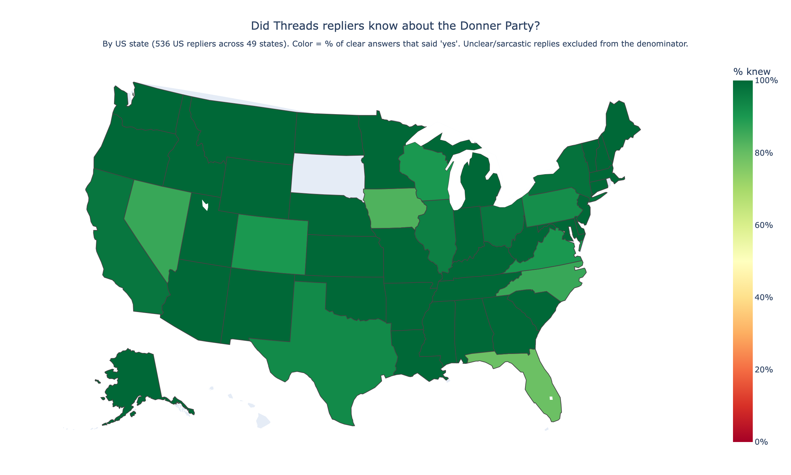
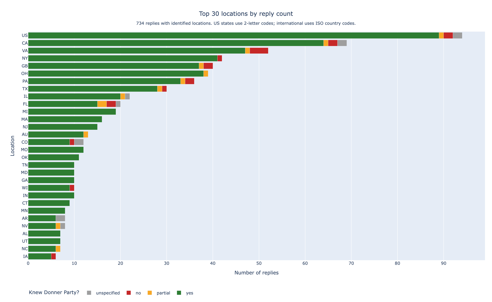
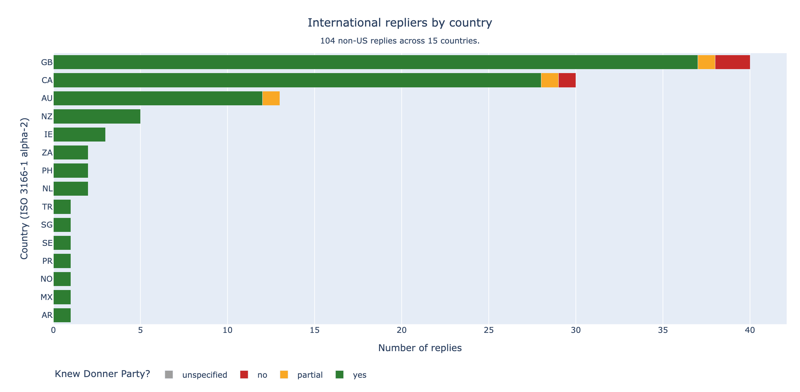
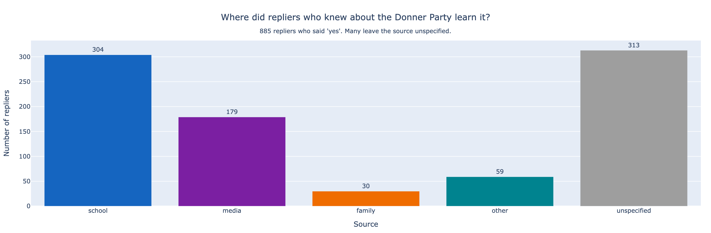

A friend asked his readers a question on a whim, got two thousand eight hundred replies, and the answer turned out to be more interesting than the question.
Last autumn, my friend Nathanael was visiting friends in Richmond, Virginia. The conversation drifted, as it does, to a topic that reminded him of cannibalism — so he said, “Ahh, like the Donner Party.” His friends, lifelong East Coasters, looked at him blankly. He explained: the wagon train, the Sierra Nevada, the winter of 1846, the cannibalism. They had no memory of it.
It seemed strange enough to be worth posting about. So he asked his readers a question:
If you grew up outside the west coast, have you heard of The Donner Party, and where did you learn about them? — @radthanael, Threads
The post collected roughly two thousand eight hundred replies, counting the nested ones. I scraped the 1,018 top-level replies, ran each through Claude Opus 4.7 with a structured-output schema, and tallied location, knowledge, and learning source. What follows is what fell out.
Of the 931 replies that gave a clear yes, no, or partial answer, 95% said yes. The rate barely moves when you split by passport: Americans came in at 96%, the rest of the English-speaking world at 94%.
Which is to say: Nathanael's Richmond friends were not the leading edge of an East Coast knowledge gap. They were genuine outliers — three people on a couch in Virginia, against a quiet near-consensus stretching from Cornwall to Brisbane.
States are coloured by the share of their repliers who answered yes, calculated only over clear answers. Sarcastic and unclassifiable replies were excluded from the denominator. The whole country glows; only Iowa runs noticeably lighter, and only South Dakota is grey, because no one from there replied at all.

Each row is a place; each segment is a count of replies coloured by what the replier said. The "US" row is for repliers identified as American who didn't name a state.

104 replies came from outside the United States, spread across 15 countries. Britain alone contributed forty — a surprising depth of recall for an 1846 American disaster on a continent where the Sierra Nevada is, at best, a brand of beer.

Of the 885 repliers who said yes, more named school than every other source put together — three hundred and four of them. Books, podcasts, films, and the immortal Oregon Trail computer game accounted for most of the remainder. A surprising number of the rest were taught by their own families.

The original premise — that this might be a regional knowledge gap — does not survive the data. Knowledge of the Donner Party is, near as the data can tell, geographically uniform across both US states and English-speaking countries. So the more interesting question this dataset gives back is not where people grew up, but which curricula did or didn't cover this:
Nathanael's Richmond friends are not "East Coasters who didn't know." They're people whose schools didn't reach them with this particular story. Which is a more interesting puzzle, because schools — unlike geography — actually have a finite number of textbooks.
Replies were collected from the original post via a logged-in browser session driven by Playwright, paginating through the GraphQL endpoint until exhausted. Each reply was sent to Claude Opus 4.7 with a structured-output schema asking four fields: location, knew, learning_source, and a verbatim evidence quote. Charts were drawn in Plotly. The whole pipeline runs end-to-end in about ten minutes.